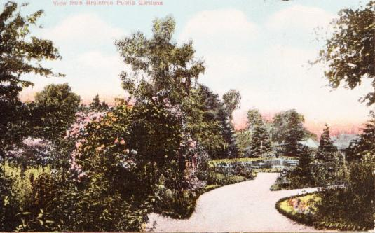

A legacy from Braintree's past to be treasured and enjoyed for the future
The Silk Worm in the Public Gardens.
Visitors to the gardens may have seen a curious wire sculpture which has suddenly appeared in the middle of the lily pond. With a little imagination, they will quickly realise it represents a silk worm and is one of 15 sculptures to be found in the Braintree District to celebrate the Sparks will Fly festival.
The prosperity of Braintree, Bocking and Halstead from the early 19th Century came from silk manufacture. Although the actual production of silk from silk worms never successfully crossed the channel, the raw silk was imported from a wide range of countries- France, Italy, Spain, Syria, India and China. The skills for turning the raw silk into yarn and then cloth was given a huge boost when Louis XIV in France started to expel the Huguenots from France. Being Protestants many of them came to England bringing with them their skills and their determination for hard work. In particular George Courtauld who was the great grandson of a Huguenot refugee to London. He came to Pebmarsh near Halstead to set up a silk throwing mill - silk throwing being the equivalent process in silk manufacture to spinning in wool or cotton. His business eventually gave birth to a new business founded by his son Samuel which eventually became the great national and local industry and for a time the largest textile company in the world, all founded on the product of the humble silk worm.
Some lovely old hand-coloured postcards from Hazel Carter's collection

"Lake" ! We more modestly call it The Pond, these days (See last photo)
A view from the Gardener's Lodge
Fun in the Gardens, c.1906, showing the windmill that pumped water to the lodge.
The Bandstand
The Public Gardens are part of the rich historical heritage of the town.
Mr. Sydney Courtauld donated what were the gardens of his
Bocking Place home to the townspeople in 1888.
A place of safety where trees and flowers could be enjoyed in peace
and quiet was the idea - still more relevant in our hectic lives today.
The lower garden pond